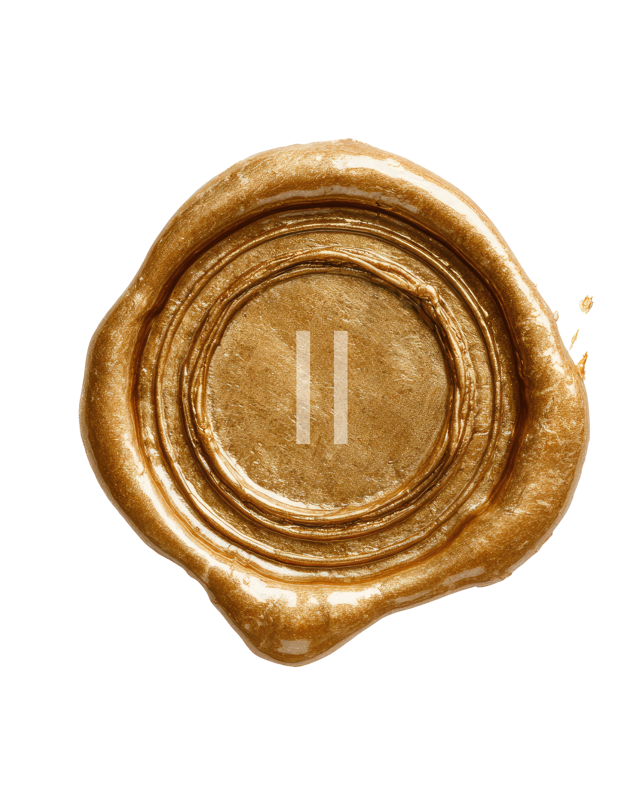

✦ A Experiência
Como funciona o seu cuidado
Do agendamento ao retorno domiciliar, cada etapa é pensada para que você se sinta segura, acolhida e cuidada.

ETAPA 01
Agendamento
Você entra em contato pelo WhatsApp, tira todas as suas dúvidas e agenda seu atendimento com antecedência — ainda durante a gestação. Simples, rápido e acolhedor.

ETAPA 02
Atendimento na Maternidade
A partir de 24h após o parto, nossa equipe vai até você na maternidade. Realizamos avaliação clínica completa, orientações, Laserterapia e aplicação do Taping Pós-Parto.
ETAPA 03
Retorno Domiciliar
Vamos até a sua casa para a reavaliação, retirada segura do taping, nova sessão de Laserterapia e Drenagem Linfática. Seu puerpério acompanhado do início ao fim.